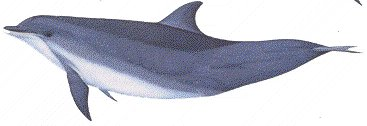

Mature bottlenose dolphins vary in length from 1.9 to 4 metres and average 200kg in weight. They have a short beak and the lower jaw is longer than the upper jaw. There are about 50 small conical teeth in each jaw. The forehead is distinctly curved and houses the "melon" that is used to emit sonar "clicks" into the water. They have a dark bluish grey dorsal (back) cape and off-white ventral (front) surface. Some bottlenose dolphins develop dark ventral spots at sexual maturity.
Bottlenose dolphins are found in all of the world's oceans except for the polar regions. Scientists believe that there are smaller inshore and larger offshore subspecies of bottlenose dolphins. The inshore variety tends to stay close to the coast and does not migrate long distances.
Bottlenose dolphins can cruise at speeds of around 10 km/hr and are able to swim above 37 km/hr. They will forage and travel at around 5 km/hr. Offshore dolphins may dive to depths of 600 metres for 15 minutes. Inshore bottlenose dolphins will usually dive for shorter durations generally less than 5 minutes.
Inshore dolphins eat a variety of fish and squid, up to 15 kg per day. They will often work together to herd schooling fish, helping each other hunt and have been known to chase fish onto sand banks and beach themselves temporarily to catch them. Offshore bottlenose dolphins will dive to over 600 metres to catch bottom-dwelling fish.
This species lives for 25-30 years. Bottlenose dolphins are sexually active throughout the year but females are fertile during spring and summer and reach sexual maturity between the ages of 5 and 12 years. Males mature between 10 and 12 years. Gestation lasts 10 to 12 months and new-born calves weigh about 30kg and average 1m in length. Most calves will be born in spring and summer. "Nurse" dolphins are known to help with births, particularly in assisting new-born calves to the surface for their first breath.
Social groups of bottlenose dolphins are usually less than 15 individuals but groups of over 1000 have been seen and are called a pod. Pods cooperate in feeding and childcare and are known to join in exploratory and defensive manoeuvres, where some animals will explore an area or possible threat while the others wait back in safety.
Bottlenose dolphins use sonar to navigate and have stereotyped and distinctive "personal signature" whistles that they use to communicate with each other. They do not have a complex language as was once thought but do communicate using sounds and body language.
Bottlenose dolphins are still quite common in the world's oceans although their numbers are certainly threatened in some areas due to pollution and dwindling fish stocks. They are hunted for food or because they compete for fish stocks in Ireland, West Africa, the Caribbean, and Japan. Large-scale commercial hunting in the Black Sea by Soviet fisherman and subsequently by Turkey, has severely reduced these populations to uncertain levels.
